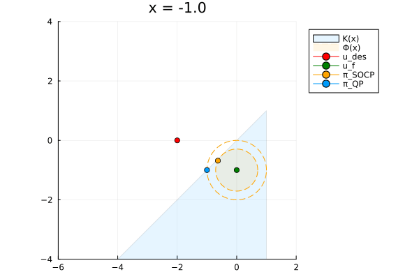

Some clarifications regarding cbf-qp.
Throughout, the system is control-affine,
$$\dot{x} = f(x) + g(x)u, \qquad x \in D \subset \mathbb{R}^n, \quad u \in U \subset \mathbb{R}^m,$$with \(f\) and \(g\) locally Lipschitz and \(U\) the admissible input set. The safe set is the zero-superlevel set of a continuously differentiable \(h : D \to \mathbb{R}\):
$$\mathcal{C} = \{x \in D : h(x) \ge 0\}, \quad \partial\mathcal{C} = \{x \in D : h(x) = 0\}, \quad \mathrm{Int}(\mathcal{C}) = \{x \in D : h(x) > 0\}.$$Note that \(\mathcal{C} \subset D\): the domain on which \(h\) is defined is strictly larger than the safe set. That containment is the whole subject of section 2.
Definition 2 (control barrier function). Let \(\mathcal{C} \subset D \subset \mathbb{R}^n\) be the zero-superlevel set of a continuously differentiable \(h : D \to \mathbb{R}\). Then \(h\) is a control barrier function if there exists an extended class \(\mathcal{K}_\infty\) function \(\alpha\) such that
$$\sup_{u \in U}\big[\, L_f h(x) + L_g h(x)\,u \,\big] \ \ge\ -\alpha\big(h(x)\big) \qquad \textbf{for all } x \in D .$$Ames, Coogan, Egerstedt, Notomista, Sreenath, Tabuada, Control Barrier Functions: Theory and Applications, Definition 2. Statements here are restated; see the paper for the originals.
The pointwise set of inputs satisfying the condition is
$$K_{\mathrm{cbf}}(x) = \big\{ u \in U : L_f h(x) + L_g h(x)\,u + \alpha(h(x)) \ge 0 \big\},$$which is affine in \(u\), hence the quadratic program
$$u(x) = \underset{u \in \mathbb{R}^m}{\arg\min} \ \tfrac{1}{2}\|u - k(x)\|^2 \quad \text{s.t.} \quad L_f h(x) + L_g h(x)\,u \ge -\alpha(h(x)) .$$Theorem 2 (sufficiency). Let \(\mathcal{C}\) be the zero-superlevel set of a continuously differentiable \(h : D \to \mathbb{R}\). If \(h\) is a control barrier function on \(D\) and \(\frac{\partial h}{\partial x}(x) \neq 0\) for all \(x \in \partial\mathcal{C}\), then any Lipschitz continuous controller \(u(x) \in K_{\mathrm{cbf}}(x)\) renders \(\mathcal{C}\) safe. Additionally, \(\mathcal{C}\) is asymptotically stable in \(D\).
Theorem 3 (necessity). Let \(\mathcal{C}\) be compact, the zero-superlevel set of a continuously differentiable \(h : D \to \mathbb{R}\), with \(\frac{\partial h}{\partial x}(x) \neq 0\) for all \(x \in \partial\mathcal{C}\). If some control law \(u = k(x)\) renders \(\mathcal{C}\) safe, then the restriction \(h|_{\mathcal{C}} : \mathcal{C} \to \mathbb{R}\) is a control barrier function on \(\mathcal{C}\).
Same source, Theorems 2 and 3.
Sufficiency asks for the condition on \(D\) and returns safety plus asymptotic stability. Necessity starts from safety on \(\mathcal{C}\) to get CBF. The gap between the hypotheses is exactly the gap between the conclusions.
Notice that the definition of a CBF itself (Definition 2) says nothing about \(\nabla h\) on the boundary - the gradient is allowed to vanish there. The regularity requirement \(\frac{\partial h}{\partial x} \neq 0\) on \(\partial\mathcal{C}\) appears only as a separate hypothesis in Theorems 2 and 3.
Here is why these matter. CBF only gives us the existence of an input to remain safe. However, to ensure safety with any control input, we need to ensure that the CBF condition does not disappear at every point of the boundary. At a boundary point where \(\nabla h(x) = 0\), both \(L_f h(x)\) and \(L_g h(x)\) vanish, so the CBF condition reads \(0 \ge 0\). This is trivially satisfied by every input, including inputs that make the system leave the safe set.
Scalar integrator \(\dot x = u\) on \(D = \mathbb{R}\) with \(U = \mathbb{R}\), the simplest possible \(\alpha(r) = r\), and
$$h(x) = -x^2, \qquad \mathcal{C} = \{0\}, \qquad h'(x) = -2x .$$Regularity fails at the only boundary point: \(h'(0) = 0\).
Impose the CBF condition on \(\mathcal{C}\) alone. There is one point to check, and there it reads
$$0 \cdot u \ \ge\ -\alpha(h(0)) = 0 ,$$which every input satisfies. So \(K_{\mathrm{cbf}}(0) = \mathbb{R}\) and \(h|_{\mathcal{C}}\) is a control barrier function on \(\mathcal{C}\).
Now take \(u \equiv 1\) - constant, hence Lipschitz, and a member of \(K_{\mathrm{cbf}}(x)\) at every point of \(\mathcal{C}\). From \(x(0) = 0\) it gives \(x(t) = t\), so \(h(x(t)) = -t^2 < 0\) for every \(t > 0\). The state is unsafe immediately, and \(\mathcal{C}\) is not forward invariant.
So the reason why CBF defined on \(D\) is for the sufficiency of safety and stability. Even if we have a CBF on \(\mathcal C\) and \(\nabla h(x)\neq 0\) on the boundary \(\partial\mathcal C\), we can still ensure safety.
These two get used interchangeably in conversation and they are not the same kind of object. One is a property of a set, the other a property of a closed loop.
Controlled invariance is a property of the set (together with the dynamics). \(\mathcal{C}\) is controlled invariant if from every state in \(\mathcal{C}\) there exists an admissible input keeping the state in \(\mathcal{C}\). No controller is named. In CBF language this is the pointwise statement \(K_{\mathrm{cbf}}(x) \neq \emptyset\), which is what the supremum in Definition 2 asserts.
Forward invariance is a property of a closed-loop system. Given a specific \(u = k(x)\), the set \(\mathcal{C}\) is forward invariant for \(\dot x = f(x) + g(x)k(x)\) if every trajectory starting in \(\mathcal{C}\) stays in \(\mathcal{C}\) on its maximal interval of existence. Definition 1 of the paper calls the system safe when this holds.
Theorem 2 does not say "any controller in \(K_{\mathrm{cbf}}(x)\)". It says any Lipschitz continuous one. The reason is basic: \(f_{\mathrm{cl}} = f + gk\) has to be locally Lipschitz for the closed-loop ODE to have a unique solution, and without a solution there is nothing for forward invariance to be a property of. Lipschitz continuity also bounds the controller's sensitivity to state perturbations, which is what keeps noise and numerical error from turning into chattering.
Strip the control theory away and what remains is a parametric quadratic program. With parameter \(x \in \mathcal{X} \subset \mathbb{R}^n\),
$$\pi(x) \ =\ \underset{u \in \mathbb{R}^m}{\arg\min} \ \big\| u - \pi_{\mathrm{des}}(x) \big\|^2 \qquad \text{s.t.} \qquad u \in K(x),$$where the feasible set is the polyhedron
$$K(x) = \big\{ u \in \mathbb{R}^m : A(x)\,u \le b(x) \big\}, \qquad A : \mathcal{X} \to \mathbb{R}^{p \times m}, \quad b : \mathcal{X} \to \mathbb{R}^{p},$$and \(a_i(x)^\top\), \(b_i(x)\) denote the \(i\)-th row of each. The CBF-QP is this problem with \(\pi_{\mathrm{des}} = k\), one row per barrier, \(a_i(x) = -L_g h_i(x)^\top\) and \(b_i(x) = L_f h_i(x) + \alpha_i(h_i(x))\), plus extra rows for input bounds.
Because the objective is strongly convex and \(K(x)\) is convex, the minimiser is unique whenever \(K(x) \neq \emptyset\), so \(\pi\) is a well-defined function rather than a set-valued map. Uniqueness is not continuity, and continuity is not Lipschitz continuity. The question is how the map \(x \mapsto \pi(x)\) behaves, and that depends on how the feasible set moves.
With no input bounds and a single CBF constraint, \(K(x)\) is a half-space and the QP is a projection onto it, with the closed-form min-norm solution
$$\pi(x) = k(x) + \frac{\max\{0,\, -\psi(x)\}}{\|L_g h(x)\|^2}\, L_g h(x)^\top, \qquad \psi(x) = L_f h + L_g h\,k(x) + \alpha(h),$$which is locally Lipschitz wherever the data are and \(L_g h(x) \neq 0\). The \(\max\{0,\cdot\}\) introduces a kink, not a jump. This is the case people have in mind when they say the CBF-QP is Lipschitz, and it is the only case where it is free.
In general, regularity of \(\pi\) is not automatic and has to be bought with a constraint qualification. Two matter here.
Slater's condition holds at \(x\) if there exists \(u\) with \(a_i(x)^\top u < b_i(x)\) for every \(i\) - that is, \(K(x)\) is strictly feasible, so it has nonempty interior.
LICQ holds at \(x\) if the gradients with respect to \(u\) of the constraints active at \(\pi(x)\) are linearly independent. Since constraint \(i\) is \(a_i(x)^\top u - b_i(x) \le 0\), its gradient in \(u\) is just \(a_i(x)\), so LICQ is the statement that the active rows of \(A(x)\) are linearly independent.
Slater's condition is sufficient for the continuity of \(\pi\). LICQ is a sufficient condition for Lipschitz continuity of \(\pi\). Where they fail, they fail hard - and, importantly, they can fail while \(A\), \(b\) and \(\pi_{\mathrm{des}}\) are all as smooth as you like. Smoothness of the problem data says nothing about regularity of the solution.
Take \(x \in \mathcal{X} = \mathbb{R}\), \(u \in \mathbb{R}^2\), and
$$\pi_{\mathrm{qp}}(x) = \underset{u \in \mathbb{R}^2}{\arg\min} \left\| u - \begin{bmatrix} -2 \\ 0 \end{bmatrix} \right\|^2 \quad \text{s.t.} \quad \begin{bmatrix} 1 & 0 \\ -1 & -x \end{bmatrix} u \le \begin{bmatrix} 1 \\ -(1+x) \end{bmatrix},$$that is, \(u_1 \le 1\) and \(u_1 + x\,u_2 \ge 1 + x\). Every entry of \(A\), \(b\) and \(\pi_{\mathrm{des}}\) is a polynomial in \(x\), so the data could not be smoother. The solution works out to
$$\pi_{\mathrm{qp}}(x) = \begin{cases} \begin{bmatrix} 1 & 1 \end{bmatrix}^\top, & x \in (0, \tfrac{1}{3}], \\[6pt] \begin{bmatrix} \dfrac{1 + x - 2x^2}{1 + x^2} & \dfrac{3x + x^2}{1 + x^2} \end{bmatrix}^\top, & \text{otherwise,} \end{cases}$$and it is discontinuous at \(x = 0\). Approaching from the left the solution tends to \((1, 0)\), which is also its value at \(x = 0\); approaching from the right it tends to \((1, 1)\). The second component jumps by exactly \(1\).
Agrawal, Lee, Panagou, Reformulations of Quadratic Programs for Lipschitz Continuity, Example 1.
It is worth watching the feasible set to see why. For \(x > 0\) the two rows carve out a wedge with its apex at \((1,1)\): rearranging, \(u_1 \le 1\) and \(u_2 \ge 1 + (1 - u_1)/x\). At height \(u_2\) the wedge has width \(x\,(u_2 - 1)\), so as \(x \downarrow 0\) it collapses onto the ray \(\{u_1 = 1,\ u_2 \ge 1\}\). The objective pulls toward \(u_2 = 0\), so the minimiser sits at the apex \((1,1)\) and stays there no matter how small \(x\) gets.
At \(x = 0\) exactly, the second row degenerates from \(u_1 + x u_2 \ge 1+x\) to \(u_1 \ge 1\). Together with \(u_1 \le 1\) the feasible set becomes the entire line \(\{u_1 = 1\}\) - including all the points with \(u_2 < 1\) that were unreachable a moment earlier. The constraint on \(u_2\) evaporates, the objective is free to pull it to zero, and the solution drops to \((1, 0)\).

which are linearly dependent. For any \(x \neq 0\) the second gradient is \((-1, -x)^\top\), which is independent of the first, so LICQ holds - the dependence appears only in the limit. This is exactly the mechanism: as two active constraint normals become parallel, the direction along which the solution can slide becomes unbounded in sensitivity, and the active set changes abruptly.
None of this is specific to barrier functions. It is a property of parametric quadratic programs, and it shows up in any optimization-based controller with more than one constraint. Slater can also hold everywhere and the solution still fail to be Lipschitz (Robinson's counterexample and Example 2 of the same paper).
Multiple barriers. No guarantee that LICQ can hold.
Input bounds, with a single barrier. Adding \(u \in U\) for a box \(U\) turns one constraint into multiple constraints.
| Situation | Status of \(\pi\) | Usual remedy |
|---|---|---|
| One constraint, \(U = \mathbb{R}^m\), \(L_g h \neq 0\) | locally Lipschitz | nothing needed |
| One constraint, \(L_g h \to 0\) | sensitivity blows up | high relative degree treatment |
| One barrier plus input bounds | Slater or LICQ can fail on a box face | shrink \(\mathcal{C}\) to be compatible with \(U\) |
| Several barriers | LICQ fails where gradients align | SOCP reformulation, smoothing, or nonsmooth analysis |
| Slater holds everywhere | still only Hölder in general | a qualification-free construction |
Definitions and theorems above are restated from A. D. Ames, S. Coogan, M. Egerstedt, G. Notomista, K. Sreenath, P. Tabuada, “Control Barrier Functions: Theory and Applications,” ECC 2019 (arXiv:1903.11199v1), Definition 2 and Theorems 2 and 3. The counterexample and the reading of the \(D\) versus \(\mathcal{C}\) distinction are mine.
The parametric QP in section 4, the discontinuous example, and the SOCP reformulation are from D. R. Agrawal, H. Lee, D. Panagou, “Reformulations of Quadratic Programs for Lipschitz Continuity” (arXiv:2508.18530); code at joonlee16/Lipschitz-controllers.